Je conçois des parcours et des interfaces web, de l'arborescence au prototype.
Diplômée d'un BUT MMI à l'IUT de Troyes. Je structure l'information, je dessine les écrans dans Figma, et je sais les intégrer : mes maquettes tiennent compte des contraintes techniques.
Architecture de l'information✦Parcours utilisateurs✦Wireframes✦Maquettes Figma✦Prototypes✦Responsive✦Architecture de l'information✦Parcours utilisateurs✦Wireframes✦Maquettes Figma✦Prototypes✦Responsive✦
Études de cas
Projets UX/UI
Chaque étude détaille le contexte, les choix de conception et les livrables produits.
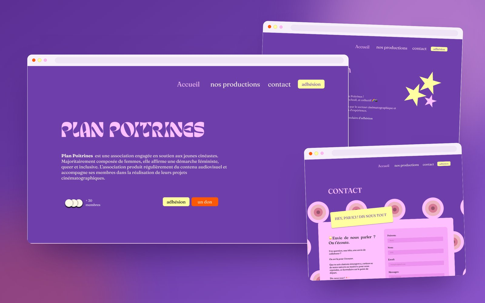
01Site associatif
Plan Poitrines
Conception du site vitrine d'un collectif audiovisuel inclusif, en pleine refonte d'identité : arborescence, wireframes puis maquette Figma validée avec les co-présidentes.
Rôle
UX/UI designer
Durée
8 semaines
Outil
Figma
Voir l'étude de cas
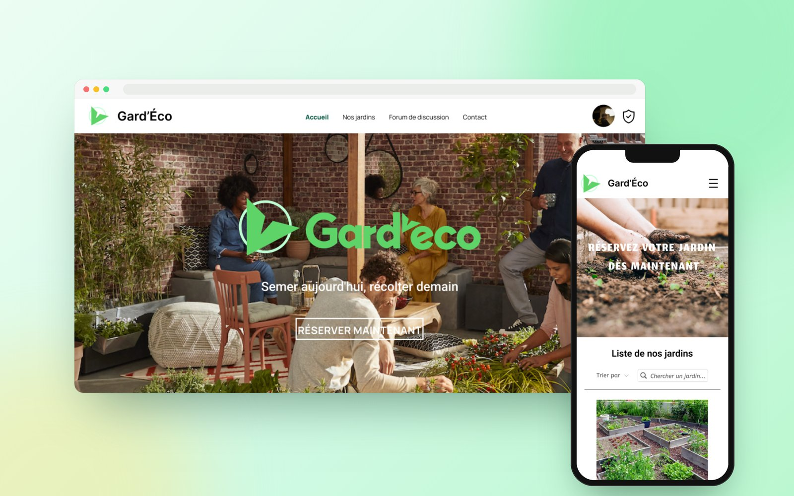
02Plateforme web
Gard'Éco
Une plateforme de jardinage partagé : trouver un jardin près de chez soi, réserver une parcelle ou proposer son propre terrain.
Support
Web & mobile
Outil
Figma
Livrables
Maquettes, prototype
Voir l'étude de cas
03Plateforme associative
Ike Oluwa — ACM
Conception de l'interface d'une plateforme de gestion associative utilisée par trois profils : bénévoles, bénéficiaires et bureau. Maraudes, événements culturels et parrainage réunis dans un seul outil.
Rôle
UX/UI designer
Support
Web & mobile
Outils
Figma, FigJam
Voir l'étude de cas
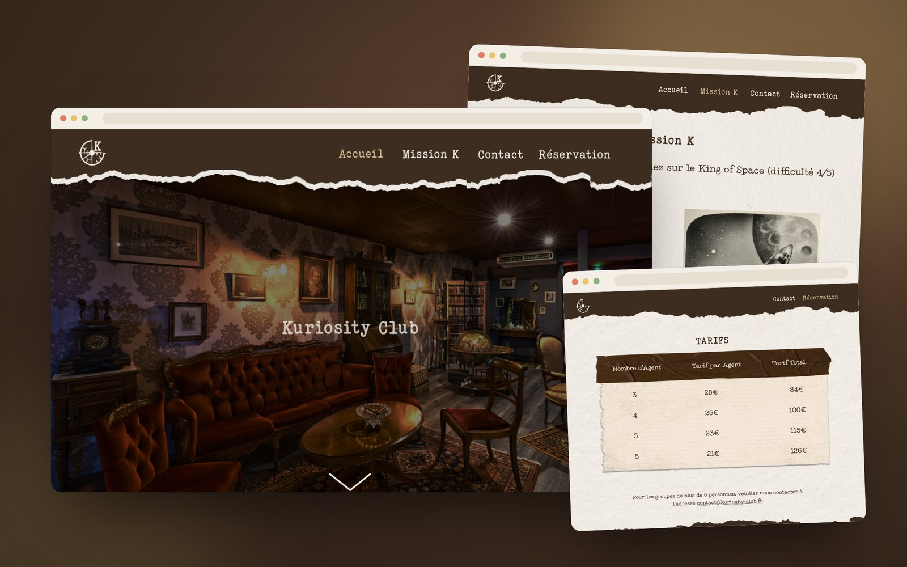
04Refonte de site
Kuriosity Club
La refonte du site d'un escape game : une identité immersive façon dossier d'enquête et une réservation plus claire.
Support
Site web
Outil
Figma
Équipe
3 personnes
Voir l'étude de cas
05Application mobile
Noor
Application PWA de bien-être et de pratique spirituelle. Deux univers à faire cohabiter sur un même écran, avec une navigation pensée pour un usage au pouce.
Rôle
Conception & dév.
Support
Mobile (PWA)
Outils
Figma, Vue.js
Voir l'étude de cas
Méthode
Comment je travaille sur un projet
Attrapez une carte pour la déplacer
01
Comprendre
Échanges avec les personnes concernées, analyse de l'existant et des outils déjà utilisés.
EntretiensBenchmark
02
Définir
Identifier les profils d'utilisateurs, leurs besoins et formuler le problème à résoudre.
ProfilsProblématique
03
Structurer
Organiser les contenus et les parcours avant de penser au visuel.
ArborescenceWireframes
04
Designer
Maquettes haute fidélité et prototype cliquable dans Figma, partagés pour validation.
MaquettesPrototype
05
Itérer & livrer
Ajuster selon les retours, puis préparer le passage au développement, ou intégrer moi-même.
RetoursIntégration
BUT MMI — IUT de Troyes
UX/UI design · Intégration web
À propos
Du développement web vers le design d'interface.
Diplômée d'un BUT Métiers du Multimédia et de l'Internet (parcours Développement web et dispositifs interactifs) à l'IUT de Troyes. Pendant mes stages, j'ai pris en charge la conception des interfaces, de l'arborescence aux maquettes Figma, avant leur développement.
Je m'oriente aujourd'hui vers le design UX/UI. Mon parcours technique me permet de concevoir des écrans réalistes à intégrer et d'échanger facilement avec les équipes de développement.
UX
Architecture de l'informationParcours utilisateursWireframingBenchmark
Conception et réalisation du site sous WordPress pour un client réel.
Catalogue produits avec affichage des prix et commande via un lien vers WhatsApp, sans paiement en ligne.
2026
9 semaines
Stage · BUT3
Conceptrice UX & développeuse web
Association ACM — action sociale et interculturelle · Épinay-sur-Seine
Recueil des besoins pour centraliser la gestion des maraudes, des événements culturels et du parrainage, jusque-là répartie entre tableurs et messageries.
Arborescence organisée autour de trois profils d'accès : bénévole, bénéficiaire, bureau.
Modélisation de la base de données et développement de la partie serveur, en tenant compte de la confidentialité des données de terrain.
2026
9 semaines
Stage · BUT3
Développeuse web — conception d'interface
RJ10 — centre de formation
Arborescence et wireframes d'un outil de suivi des certifications, pensé pour un administrateur non technique.
Tableau de bord permettant de repérer en un coup d'œil les titres proches de leur expiration.
Développement de l'application et des rappels automatiques par email, adaptés à chaque type de formation.
Avr. – juin 2025
8 semaines · télétravail
Stage · BUT2
UX/UI designer & intégratrice web
Plan Poitrines (ex-Black Sheep) — collectif audiovisuel
Arborescence du site en quatre pages, définie et validée avec les deux co-présidentes.
Wireframes puis maquette Figma, dans un contexte de refonte de l'identité visuelle de l'association.
Intégration responsive en HTML/CSS et mise en ligne provisoire pour recueillir les retours de l'équipe.
Formation
BUT Métiers du Multimédia et de l'Internet
IUT de Troyes · Parcours Développement web et dispositifs interactifs
2023 – 2026
Côté code
Projets de développement
Stages et projets universitaires où j'ai développé les interfaces et la partie serveur.
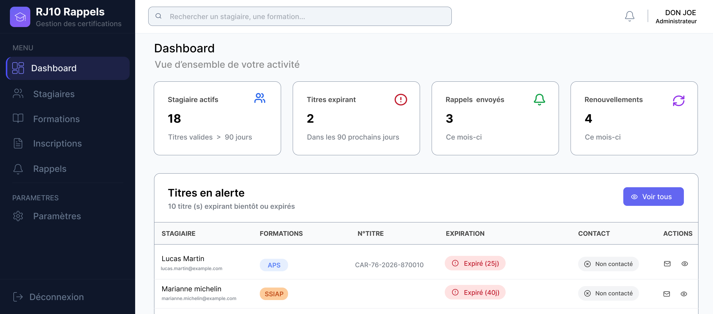
Application web
RJ10 Rappel
Rappels automatiques pour le renouvellement des certifications professionnelles.
Symfony 7Vue.js 3
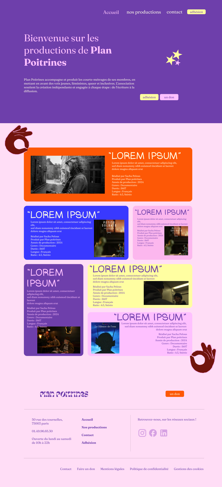
Site vitrine
Plan Poitrines — Vitrine
Intégration responsive du site à partir de la maquette Figma.
HTML5CSS3
Plateforme associative
Ike Oluwa — Back-end
Modélisation et développement serveur de la plateforme associative.
PHPSQL
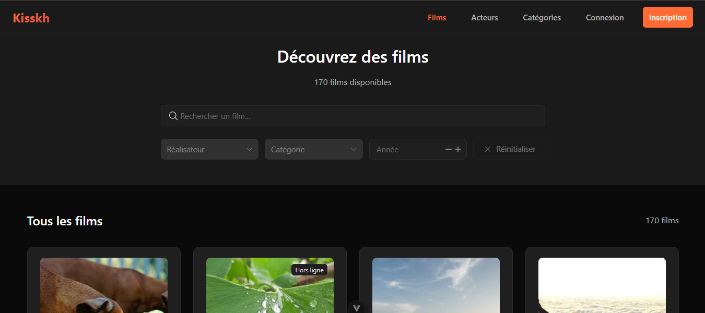
API web
WR506D — Search Films
API Symfony avec GraphQL, authentification JWT et double authentification.
Symfony 7GraphQL
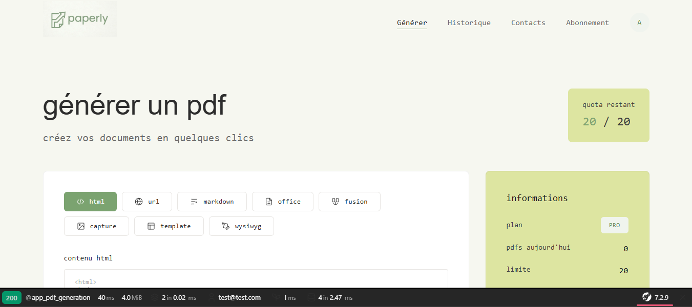
Application web
WR602D — Micro-services
Génération de PDF via Gotenberg et abonnements Stripe.
Des rappels automatiques pour le renouvellement des certifications professionnelles.
Rôle
Conception & développement
Durée
9 semaines · 2026
Outils
Symfony 7, Vue.js 3
Structure
RJ10 Formation
01
Contexte
Un centre de formation aux métiers de la sécurité. Son logiciel de gestion ne prévenait pas les anciens stagiaires de l'expiration de leur titre.
APS, SSIAP, SSTTravail en autonomieFidélisation
02 · Problème
Comment relancer automatiquement les anciens stagiaires avant l'expiration de leur certification ?
03
Processus
ArborescenceUn accès administrateur organisé autour des stagiaires et des formations.
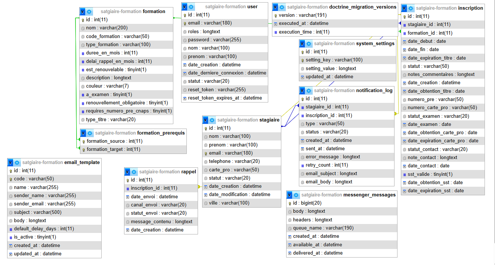
DonnéesUne durée de validité propre à chaque formation : 5, 3 ou 2 ans.
04
Wireframes
Chaque page, écran par écran.
05
Interface
Les titres proches de l'expiration ressortent en un coup d'œil.
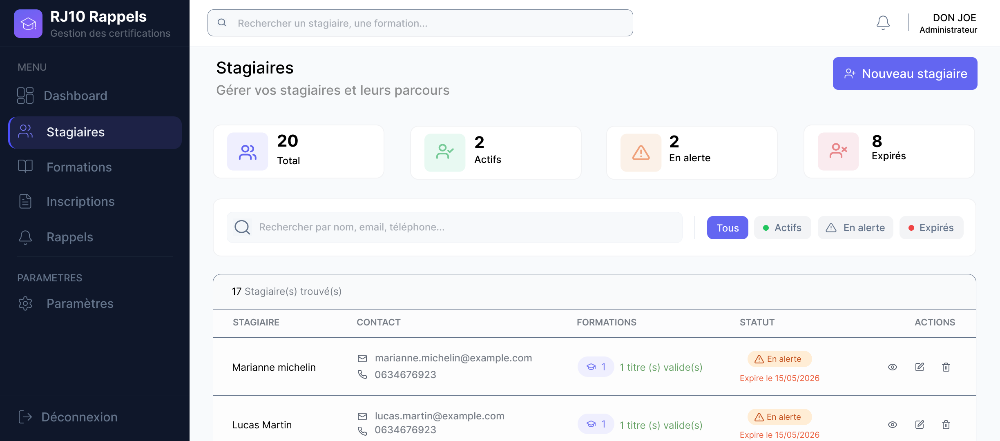
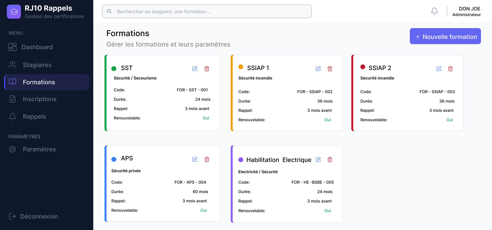
FormationsInscription
06
Mockups
Le projet en situation, sur ordinateur et sur mobile.
07
Détails
Zoom sur les choix d'interface.
Email de relanceUn message adapté à chaque formation.RappelsLa planification des relances.
08
Bilan
Difficulté
Travailler seule, sans interlocuteur technique.
Ce que j'en retiens
Consacrer plus de temps à l'analyse du métier avant d'écrire du code.
Dossier n°04 · Refonte de site · Identité visuelle
Kuriosity Club
La refonte du site d'un escape game, pensée comme un dossier d'enquête.
Affaire résolue
Rapport · Le projet
Kuriosity Club propose des missions d'escape game à Troyes. La refonte devait plonger le visiteur dans l'univers du lieu dès la page d'accueil, tout en rendant les informations pratiques et la réservation faciles à trouver.
Comment créer une ambiance immersive sans perdre en clarté ?
Pièce n°2 · Les pagesPapier vieilli, bords déchirés et machine à écrire.
Pièce n°3 · L'ambianceLe lieu en plein écran dès l'accueil.
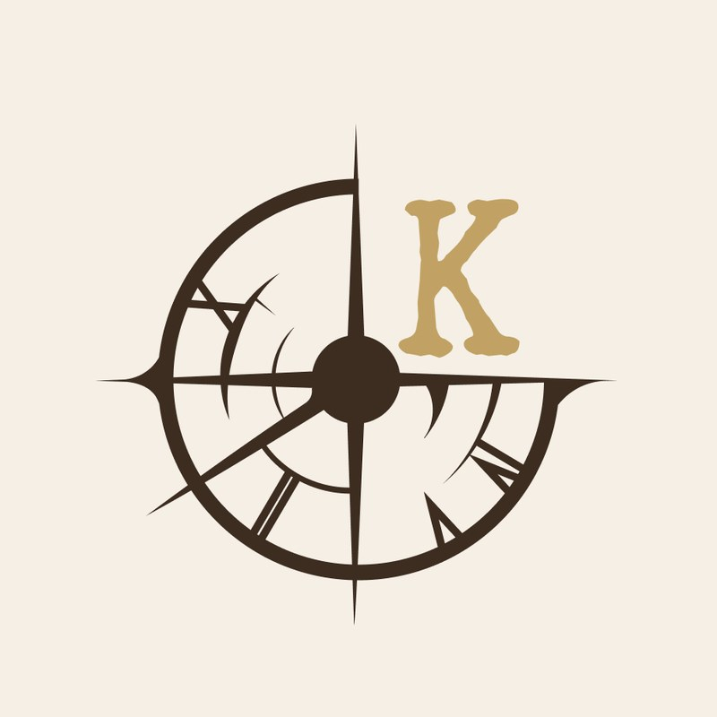
Pièce n°4 · Le logoUne horloge romaine et un K pour la curiosité.
Pièce n°5 · Les couleursBruns profonds et or patiné : #3D2C20, #624332, #C1A264, #F5EFE6.
Pièce à conviction
Une page par mission
Le scénario est tapé à la machine sur papier vieilli, avec une illustration rétro et un seul bouton pour réserver.
Elegant Typewriter
Typographie du site
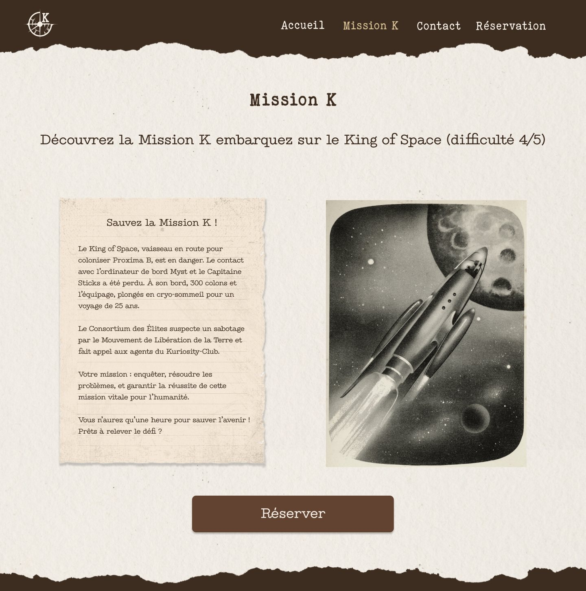
Passe la loupe sur la page pour l'examiner.
Application web · Bien-être
Noor
Une application qui relie le suivi du cycle et la pratique spirituelle.
RôleUX/UI et développement
OutilFigma
SupportWeb et mobile
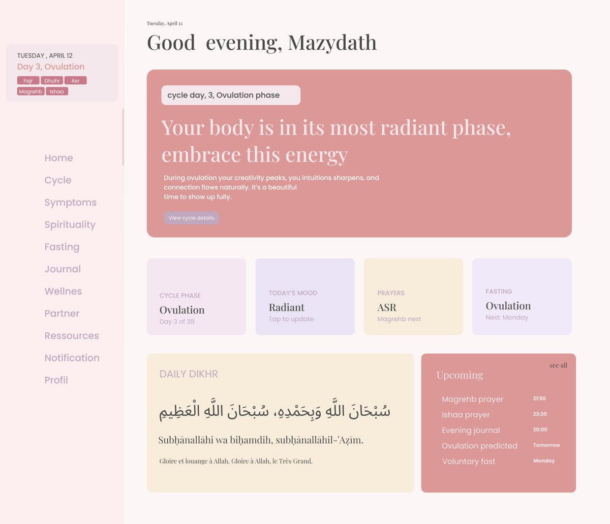
Le constat
Deux besoins séparés
Les applis de cycle ignorent la spiritualité, et l'inverse.
La réponse
Un seul tableau de bord
Le cycle, les prières et le jeûne au même endroit.
Le défi
Rester doux et lisible
Beaucoup d'informations, sans jamais surcharger.
Les écrans
Trois espaces, une même douceur
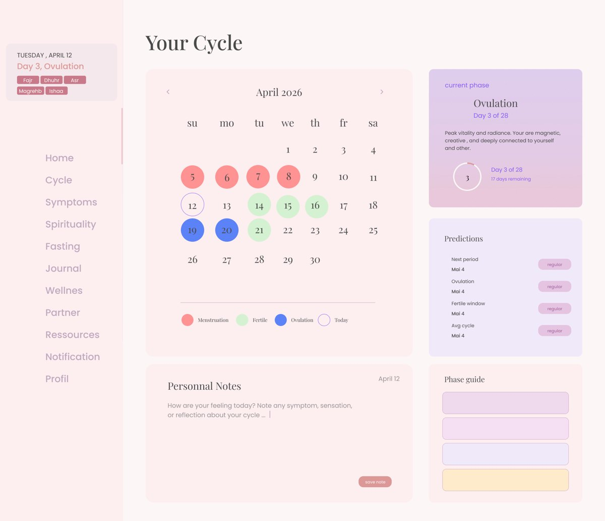
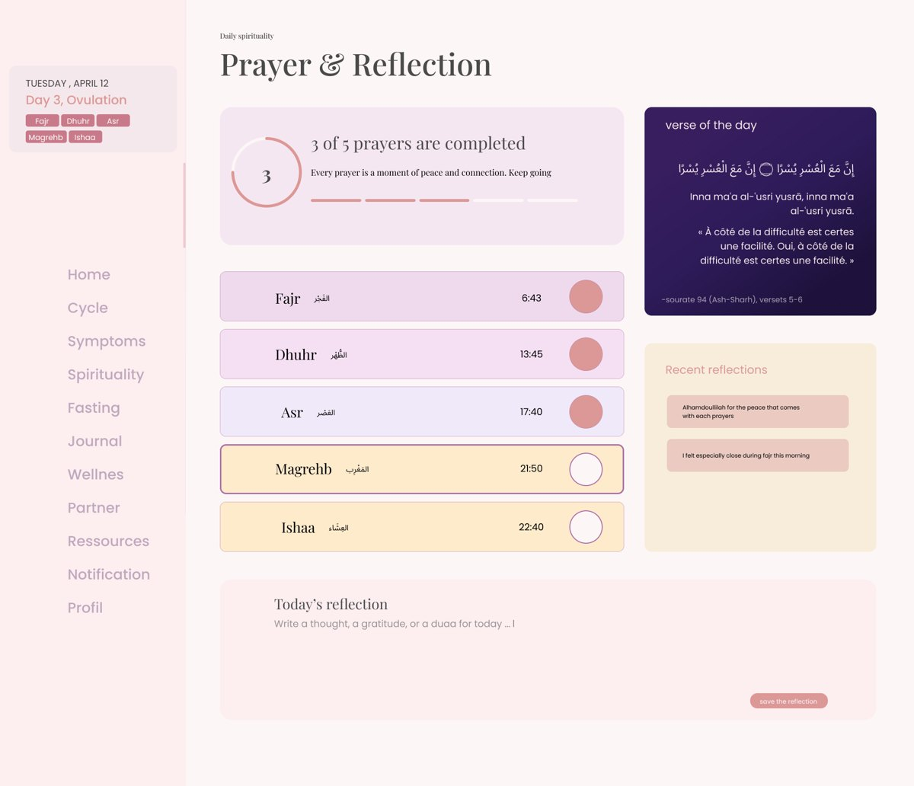
CycleAccueilSpiritualité
Zoom
Des composants pensés un à un
Chaque bloc a sa couleur : rose pour le cycle, lilas pour la phase, crème pour la prière.
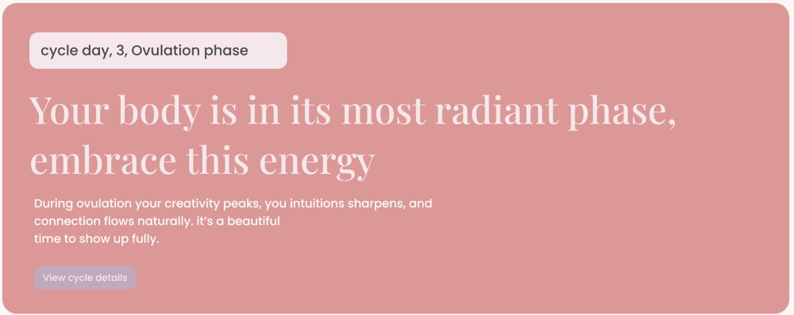
Un message adapté à la phase du jour
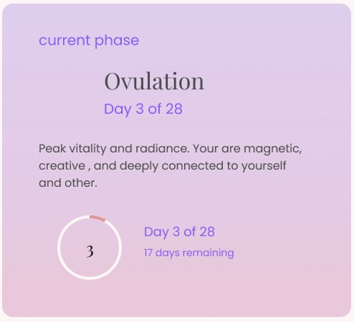
La phase en coursLe verset du jour
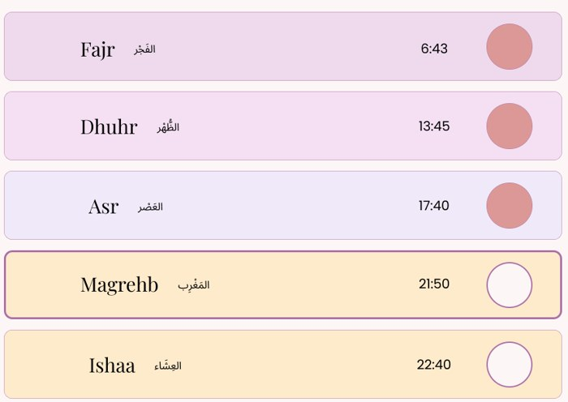
Les cinq prières, cochées une à une
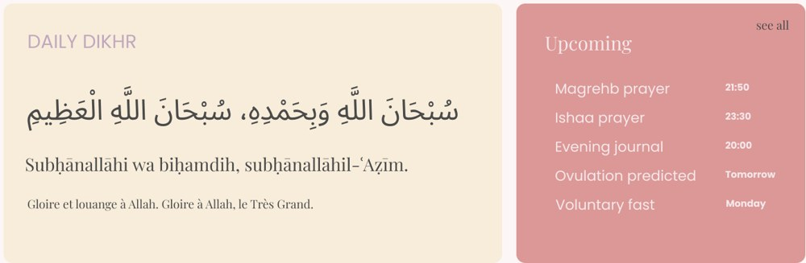
Le dhikr du jour et les prochains rendez-vous
Espace partenaire
Partager, en gardant le contrôle
Un code pour relier son partenaire.
Elle choisit ce qui est partagé
Prières et journal restent privés
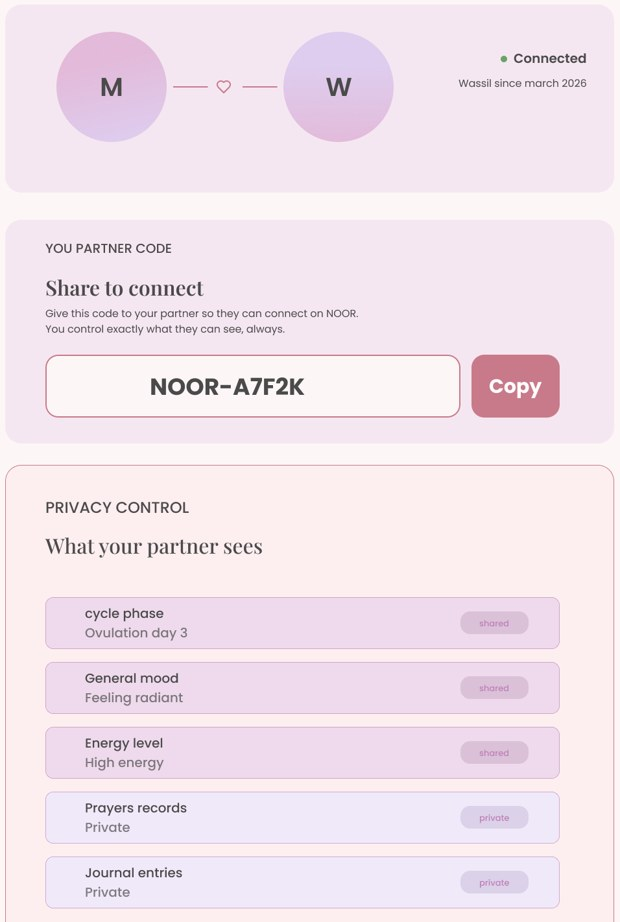
Identité
Une palette apaisante
Rose#DC9896
Lilas#E9E3F5
Crème#F8EDDB
Fond#FDF6F6
Prune#2D1650
Typographies
Playfair Display
Poppins
Site associatif · UX/UI et intégration
PlanPoitrines
Le site vitrine d'un collectif de jeunes cinéastes, de l'arborescence au site en ligne.
le site, version ordinateur
Le projet
Plan Poitrines accompagne de jeunes cinéastes autour de valeurs féministes, queer et inclusives. Pendant mon stage, j'ai conçu puis intégré son site vitrine, alors que l'association changeait de nom et d'identité visuelle.
Comment concevoir le site d'une association dont la charte graphique est encore en construction ?
RôleUX/UI designer et intégratrice
Durée8 semaines · 2025
OutilsFigma, HTML, CSS
ÉquipeAvec les deux co-présidentes
01 · Recherche
D'abord sur papier
Avant les couleurs, j'ai posé la structure du site et la hiérarchie de chaque page à la main.
Arborescence
Quatre pages, pour un membre, un partenaire et quelqu'un qui découvre l'association.
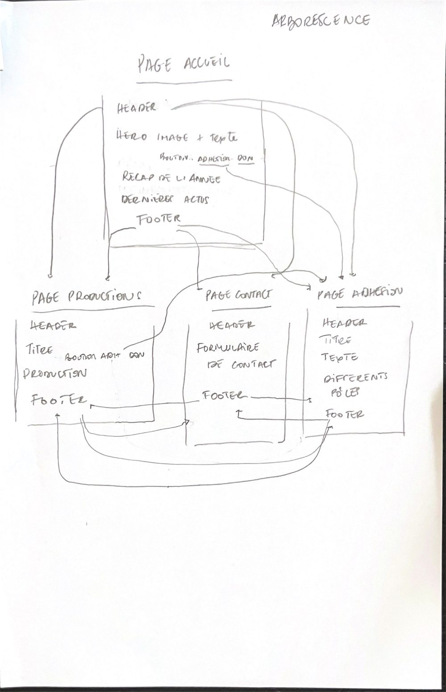
Wireframes
Accueil, Productions et Contact, dessinés pour fixer les blocs de chaque page.
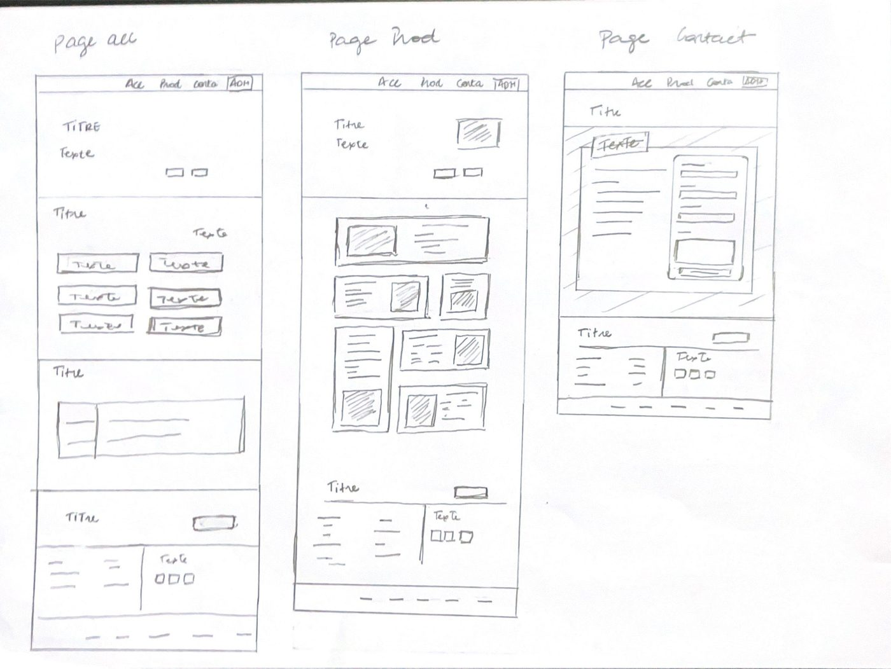
02 · Design
Les pages
Un violet affirmé, des roses et des touches de jaune et d'orange, à l'image d'un collectif engagé et joyeux.
Survole une page pour la faire défiler.
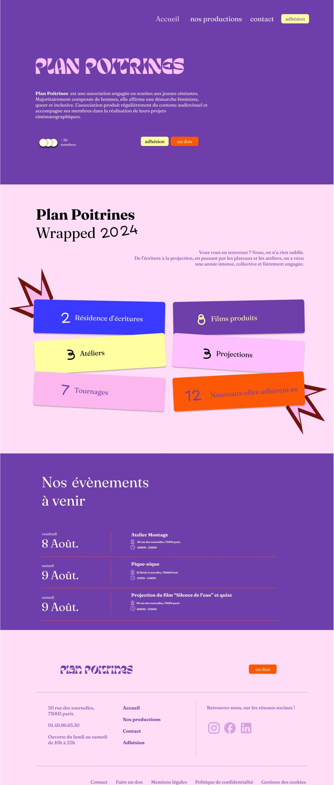
Accueil 01
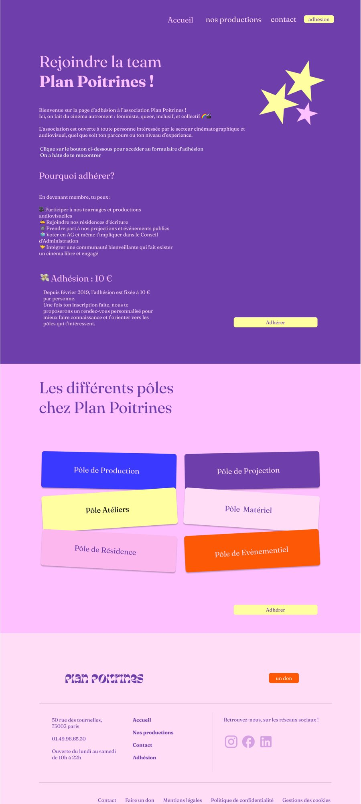
Adhésion 02
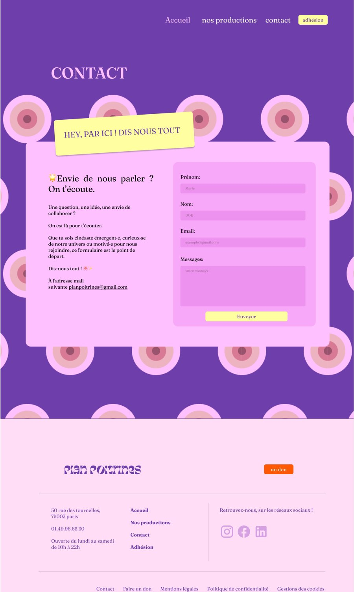
Contact 03
03 · Zoom
Une page d'accueil vivante
Le bilan de l'année sous forme d'étiquettes colorées, dans l'esprit des rétrospectives annuelles des applications.
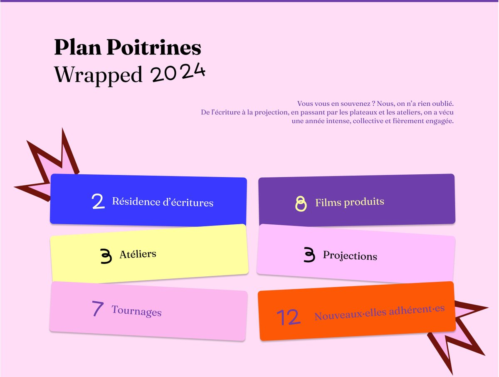
04 · Intégration
Le site, une fois codé
Après la maquette, j'ai codé le site moi-même en HTML et CSS.
Fidèle à la maquette Figma
Adapté au mobile
En ligne pour l'association
05 · Identité
Couleurs
Une palette vive, choisie avec l'équipe pendant la refonte de l'identité.
Violet#6E3FAB
Rose clair#FFDDF6
Rose#FCB7EE
Jaune#FFFEA1
Bleu#3939FF
Orange#FD5806
Plateforme web · Web & mobile
Gard'Éco.
Trouver un jardin partagé près de chez soi et y réserver une parcelle.
SupportWeb & mobile
OutilFigma
LivrablesMaquettes, prototype
9:41
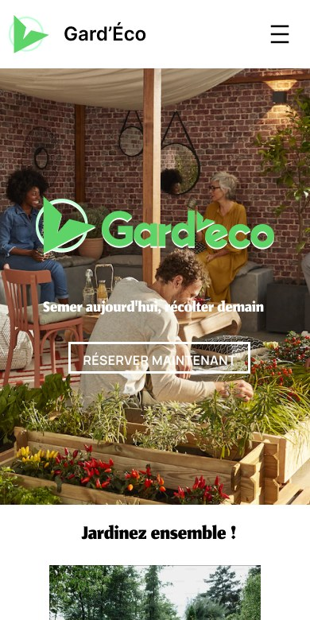
9:41
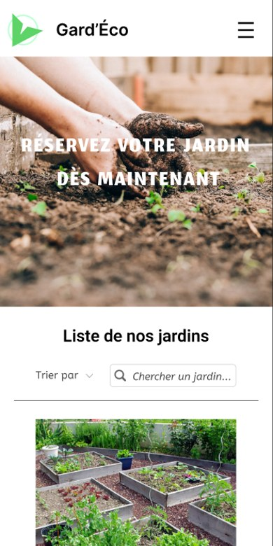
Le constat
Des jardins partagés, mais introuvables
Il en existe près de chez soi, mais ils sont difficiles à trouver et à réserver.
La réponse
Toute l'offre au même endroit
Gard'Éco réunit les jardins pour les jardiniers novices comme confirmés.
Le défi
Réserver une parcelle en quelques étapes
Trois profils à servir : visiteur, membre et admin.
Parcours clé
Réserver une parcelle en trois écrans
Sur mobile, chaque étape tient sur un écran, sans détour.
1
Choisir un jardin
Adresse, parcelles et surface, visibles d'un coup d'œil.
9:41
2
Indiquer ses parcelles
Combien de parcelles, et ce qu'on y cultive.
9:41
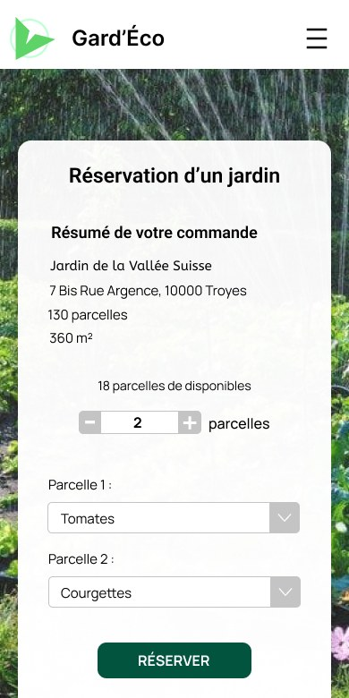
3
Confirmer
Un message clair, et la réservation rangée dans le profil.
9:41
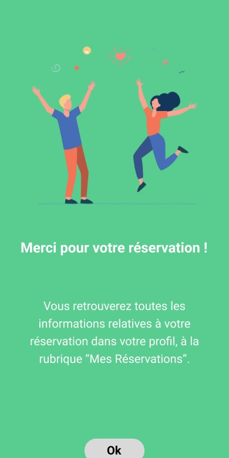
Sur ordinateur
Trouver un jardin
La liste met en avant ce qui aide à choisir.
1Une photo pour se projeter
2Adresse, parcelles et surface
3Un bouton Réserver sur chaque jardin
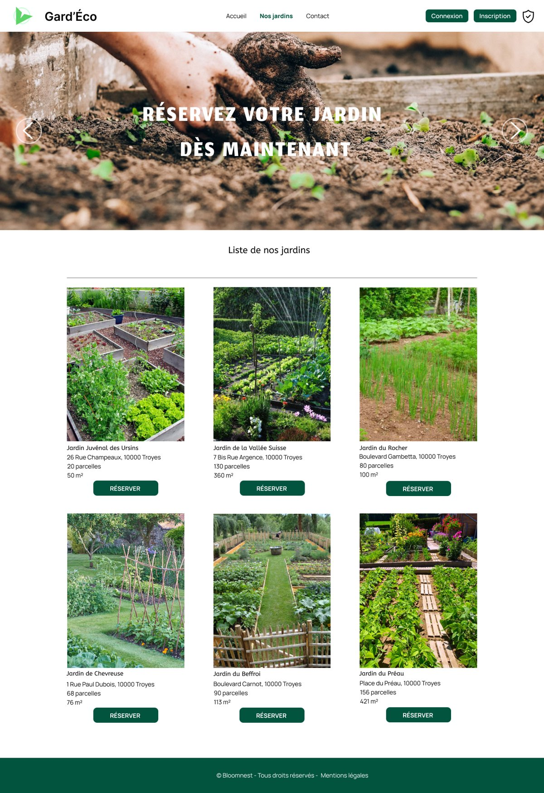
Communauté
Rejoindre et partager
Des formulaires courts pour se connecter, puis rechercher un jardin, proposer le sien ou contacter l'équipe.
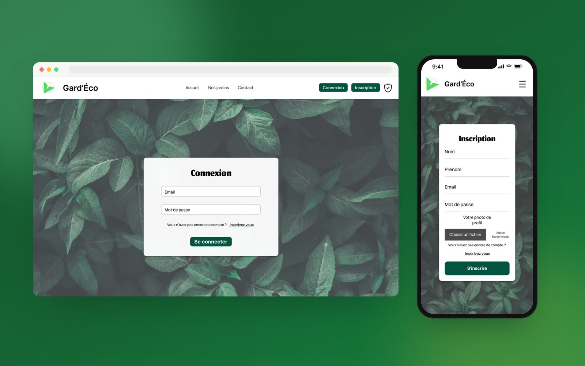
Connexion et inscriptionDeux champs pour entrer, cinq pour s'inscrire.
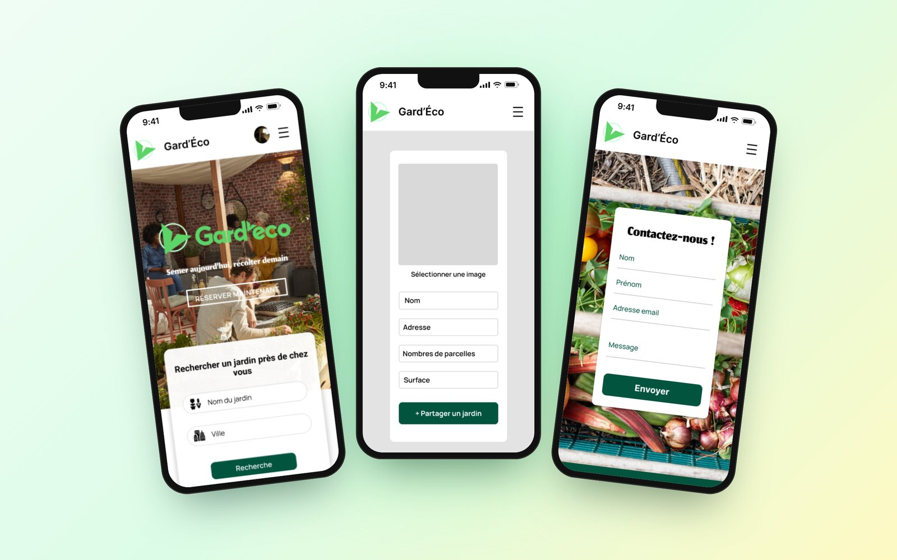
Une fois connectéRechercher, partager, contacter.
Identité visuelle
Des verts tirés du jardin
Un fond menthe clair et des photos de jardiniers.
Forêt#03543F
Vif#5ED368
Menthe#59CD90
Fond#F2FFF7
Texte#202020
Gard'Éco
Plateforme associative
Ike Oluwa
L'interface d'une plateforme de gestion utilisée par trois profils.
Rôle
UX/UI designer
Support
Web & mobile
Outils
Figma, FigJam
Profils
Bénévole, bénéficiaire, bureau
01
Contexte
La plateforme dont j'ai développé la partie serveur pendant mon stage. J'en conçois maintenant l'interface dans Figma.
3 profils d'accèsMaraudesÉvénements culturels
02 · Problème
Comment permettre à trois profils aux besoins différents d'utiliser le même outil ?
03
Processus
ArborescenceChaque profil ne voit que les espaces qui le concernent.Parcours utilisateurLe parcours type de chaque profil.
04
Wireframes
Chaque page, écran par écran.
05
Interface
Les écrans clés de la plateforme.
06
Mockups
Le projet en situation, sur ordinateur et sur mobile.